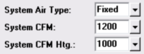

System Air Type and CFM (System Data Window) |
  
|
System Air Type and CFM (System Data Window) |
|

System air type: Enter "Fixed" (just type "F") if you want to enter the actual CFM of the unit that will be installed for this system. Enter "Auto" (just type "A") if you want Rhvac to instead calculate the minimum required CFM for the system. If you enter "Fixed", you will also need to enter a CFM value in the System CFM input (see below).
System CFM: If you have selected 'Fixed' for the 'System air type' input, enter the actual flow of air here. If you select 'Auto,' this input will be grayed out and unavailable.
This value will be used for both heating and cooling unless you enter a value in the "System CFM Htg." input as well. In that case the value you enter into this input will be the cooling CFM.
Normally, you will only need to enter one system CFM value, but the "System CFM Htg." input is provided for situations where you have an air handler that will operate at a different speed for the heating season.
System CFM Heating (Optional): Normally, you will only need to enter one system CFM value, but the "System CFM Htg." input is provided for situations where you have an air handler that will operate at a different speed for the heating season. If you do want the system CFM for heating to be different from that for cooling, enter a value here. If you leave this input at zero the program will use the value you entered for System CFM for both heating and cooling. If you enter a value here, the program will use the value you entered in the "System CFM" input for cooling.